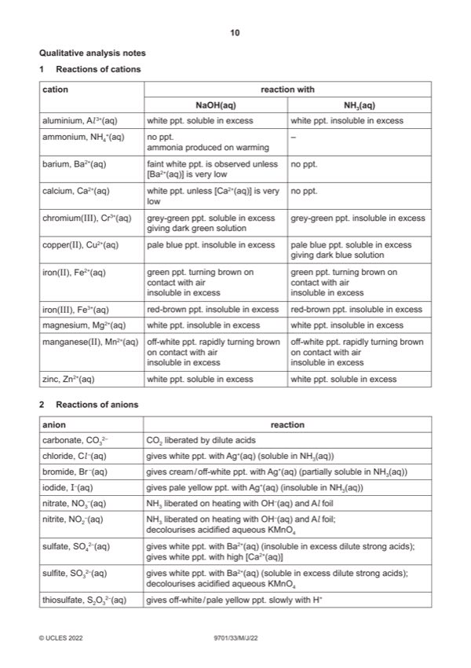

Question 1

Original paper page 10
Part 1(a) — solution
- two burette readings AND titre for the rough titration
- initial and final burette readings for two (or more) accurate titrations
- initial / start AND (burette) reading/volume + unit
- final / end AND (burette) reading/volume + unit
- titre + unit OR volume / FA 2 and used / added + unit
- two (or more) accurate identical titres (ignoring any that are labelled ‘rough’), then
- two (or more) accurate titres within 0.05 cm3, then
- two (or more) accurate titres within 0.10 cm3, etc
Mark points
- two burette readings AND titre for the rough titration
- initial and final burette readings for two (or more) accurate titrations
- initial / start AND (burette) reading/volume + unit
- final / end AND (burette) reading/volume + unit
- titre + unit OR volume / FA 2 and used / added + unit
- two (or more) accurate identical titres (ignoring any that are labelled ‘rough’), then
- two (or more) accurate titres within 0.05 cm3, then
- two (or more) accurate titres within 0.10 cm3, etc
Part 1(b) — solution
Correctly calculates the mean titre correct to 2 dp from accurate titres that are within 0.20 cm3 total spread 1
Mark points
- Include the ideas shown in the solution above.
Part 1(c)(i) — solution
Answer: 1000 · AND
- amount of NaOH used = 0.150
Mark points
- amount of NaOH used = 0.150
Part 1(c)(ii) — solution
- amount of H3PO4 in 25 cm3 = = 0.00175(0) = 1.75 10−3 mol
Mark points
- amount of H3PO4 in 25 cm3 = = 0.00175(0) = 1.75 10−3 mol
Part 1(c)(iii) — solution
- Explanation: mole ratio of ans (c)(i) : ans (c)(ii) = 2 : 1 (approx) OR calculation shown
Mark points
- Explanation: mole ratio of ans (c)(i) : ans (c)(ii) = 2 : 1 (approx) OR calculation shown
Part 1(c)(iv) — solution
- Expected equation: H3PO4 + 2NaOH → Na2HPO4 + 2H2O
Mark points
- Expected equation: H3PO4 + 2NaOH → Na2HPO4 + 2H2O
Part 1(d)(i) — solution
- Correct expression for % error = (= 0.24%)
Mark points
- Correct expression for % error = (= 0.24%)